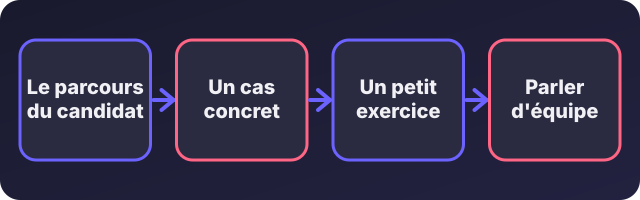
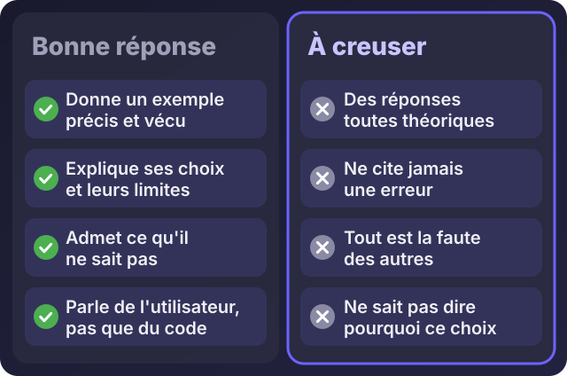

Accueil / Blog / Pour les recruteurs et clients
Pour les recruteurs et clientsQuelles questions poser à un développeur en entretien (et comment reconnaître une bonne réponse) ?

Écouter cet article · environ 6 min
Vous avez trois candidats développeurs en face de vous. Tous parlent de langages et d'outils. Comment savoir lequel va vraiment résoudre vos problèmes ? Poser des questions de syntaxe ne suffit pas : aujourd'hui, une IA répond à ce genre de question en deux secondes. Ce qui compte, c'est la façon de réfléchir, de vérifier et de parler à des non-techniciens.
Je vous propose huit questions, ce qu'il faut écouter dans la réponse, et, pour illustrer, comment j'y répondrais moi-même. Je suis développeur et je passe aussi des entretiens : autant que vous voyiez à quoi ressemble une réponse.
Les quatre temps d'un bon entretien

- Le parcours : on écoute des exemples vécus, pas une liste de compétences.
- Un cas concret : on donne un vrai problème de l'entreprise et on regarde comment la personne s'y prend.
- Un petit exercice : une heure ou deux, proche du travail réel.
- L'équipe : comment il travaille avec les autres, comment il rend compte.
Huit questions à poser
1. « Parlez-moi d'un projet dont vous êtes fier. »
Ce que vous cherchez : un projet précis, avec un problème de départ, des choix faits et un résultat. Pas une liste de technologies.
Ma réponse : je parlerais de l'application de retrait de chèques chez IvoirRapid. Le problème : des échanges dispersés et aucune preuve claire de la remise. J'ai conçu un parcours simple, installable sur téléphone, avec une preuve de remise en photo ou en PDF.
2. « Comment comprenez-vous un besoin métier avant de coder ? »
Ce que vous cherchez : quelqu'un qui pose des questions avant d'écrire du code, et qui va voir comment le travail se fait aujourd'hui.
Ma réponse : je demande quel problème on veut résoudre, qui utilisera l'outil, comment c'est fait aujourd'hui, et ce qui fait perdre du temps ou provoque des erreurs. J'observe le flux de travail avant de proposer quoi que ce soit.
3. « Comment utilisez-vous l'IA dans votre travail ? »
Ce que vous cherchez : une personne qui l'utilise et qui la contrôle. Méfiez-vous de celui qui dit ne jamais l'utiliser, comme de celui qui lui fait entièrement confiance.
Ma réponse : je l'utilise pour aller plus vite : produire un premier jet, expliquer, corriger. Mais je relis, je teste dans des cas réels et je sécurise ce qu'elle produit avant de livrer. Elle propose, c'est moi qui réponds du résultat.
4. « Que faites-vous quand un bug apparaît en production ? »
Ce que vous cherchez : une méthode calme : reproduire, isoler, corriger, vérifier, prévenir les utilisateurs.
Ma réponse : je commence par comprendre ce qui s'est passé et pour qui, je reproduis le problème, je corrige, je teste, puis j'explique simplement aux utilisateurs ce qui s'est passé. Si les données sont en jeu, je sauvegarde avant de toucher à quoi que ce soit.
5. « Comment protégez-vous les données ? »
Ce que vous cherchez : des réflexes de base : accès limités, sauvegardes, aucun mot de passe dans le code, ne garder que les données nécessaires.
Ma réponse : chacun n'accède qu'à ce dont il a besoin, les secrets ne sont jamais écrits dans le code, les sauvegardes sont automatiques, et on ne collecte que ce dont on a vraiment besoin.
6. « Comment expliquez-vous un problème technique à quelqu'un qui n'y connaît rien ? »
Ce que vous cherchez : quelqu'un qui sait traduire. C'est ce qui fait la différence entre un développeur utile et un développeur isolé.
Ma réponse : j'utilise des comparaisons. Par exemple, une page web, c'est une maison : le HTML, ce sont les murs, le CSS la peinture, le JavaScript l'électricité. J'ai été formateur, et c'est un réflexe que j'ai gardé.
7. « Racontez-moi une erreur et ce que vous en avez retenu. »
Ce que vous cherchez : de l'honnêteté. Quelqu'un qui n'a jamais fait d'erreur n'a pas assez travaillé, ou ne le dit pas.
Ma réponse : je vous donnerais une vraie situation, avec ce qui s'est passé et ce que j'ai changé depuis. Ma règle aujourd'hui : je teste sur des cas réels avant de livrer, et je ne mets en production que ce que je sais défaire.
8. « Pourquoi ce choix technique plutôt qu'un autre ? »
Ce que vous cherchez : des raisons, pas des habitudes. Un bon développeur sait aussi dire ce que son choix coûte.
Ma réponse : pour le retrait de chèques, j'ai choisi une application web installable plutôt qu'une application à télécharger : pas de magasin d'applications, plus léger à déployer, mis à jour pour tout le monde en même temps. Le prix à payer : moins de fonctions liées au téléphone.
Reconnaître une bonne réponse

Une bonne réponse donne un exemple précis, explique ses choix et leurs limites, admet ce qu'elle ne sait pas, et parle de l'utilisateur autant que du code. Une réponse à creuser reste théorique, ne cite jamais d'erreur, met tout sur le dos des autres ou n'explique pas pourquoi.
Le petit exercice
Plutôt qu'un test de théorie, donnez un exercice proche du vrai travail, d'une à deux heures : par exemple, une page avec un formulaire qui enregistre les demandes, ou un tableau qui calcule des relances. Ce que vous regardez : la clarté de la solution, la façon d'expliquer, l'usage de l'IA (permis, et à commenter), et les cas particuliers pensés.
Si vous êtes le candidat
Préparez trois histoires vraies : un projet dont vous êtes fier, un problème que vous avez résolu, une erreur dont vous avez tiré une leçon. Entraînez-vous à les raconter simplement, comme si vous parliez à quelqu'un qui n'est pas technicien. C'est ce qui vous distinguera de ceux qui récitent leurs compétences.